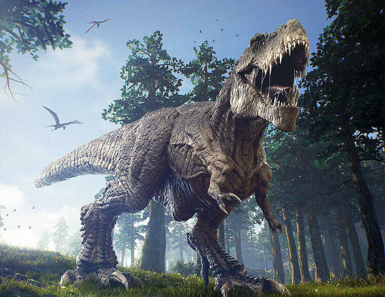
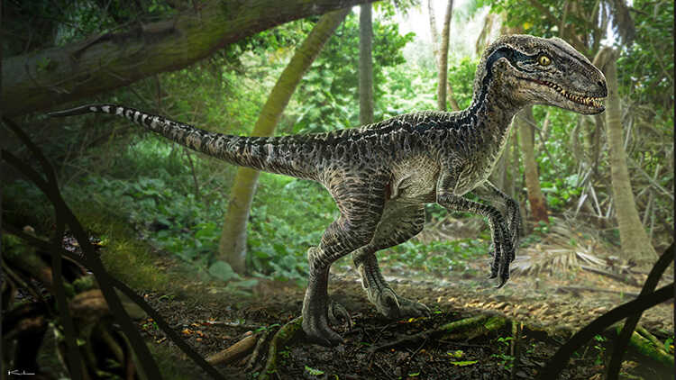
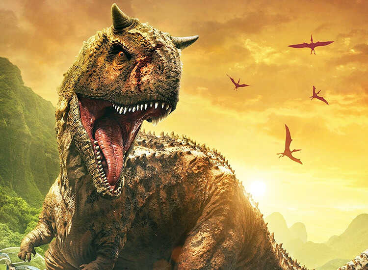
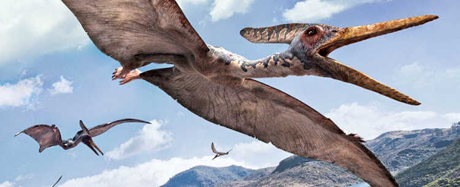

Тиранозавр

Тиранозавр – це найбільший відомий динозавр, який існував у крейдянський період. Він мав величезний голову з великими зубами.
Велоцираптор

Велоцираптор – це хижий динозавр, який мав гострі когті та був дуже швидким.
Спинозавр

Спинозавр – найбільший хижий динозавр, якого коли-небудь знайшли. Він має довгі колючки (вітрила) на спині.
Карнотавр

Карнотавр – великий хижий динозавр з двома рогами на маківці, найшвидший з відомих великих динозаврів, який бігає.
Птерозавр

Птерозавр – унікальні риси скелета, з перетинками крил, що нагадували пташині крила, і були здатні літати.